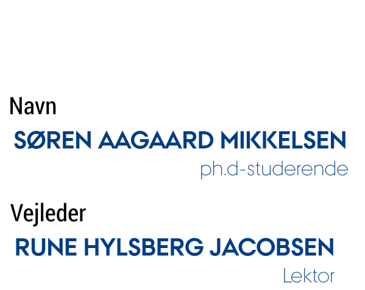
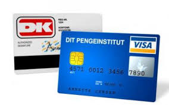
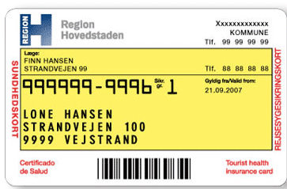
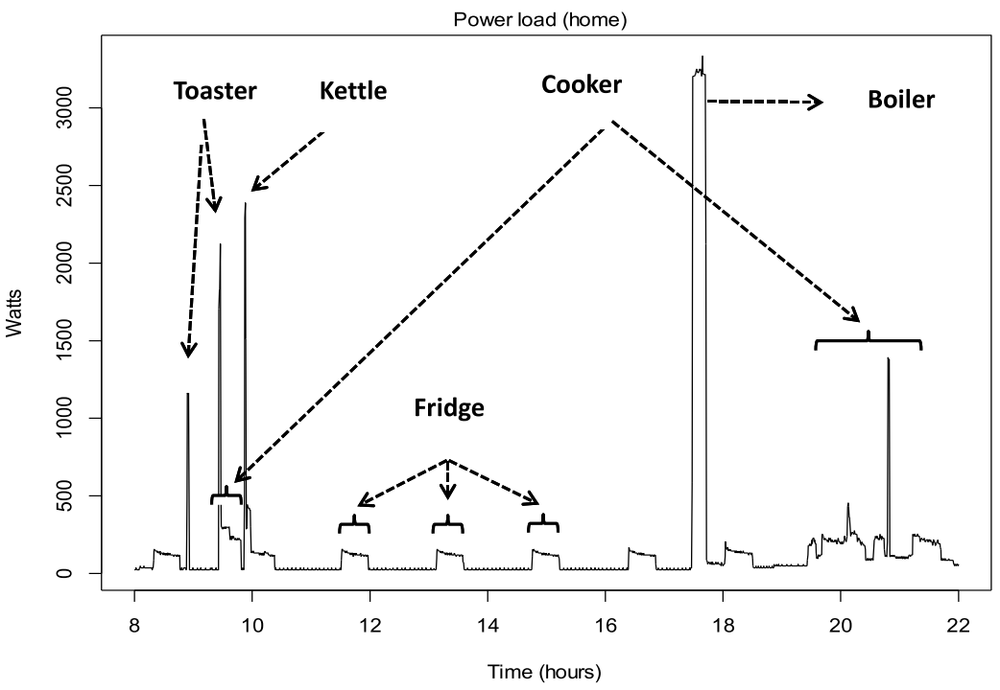
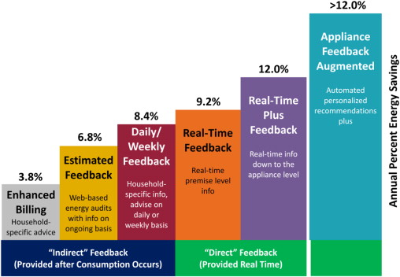
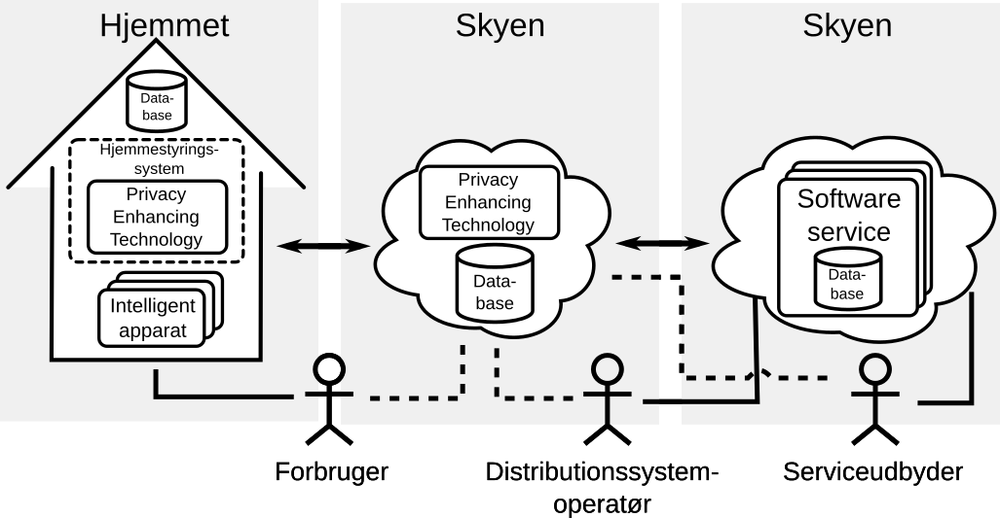

Privatlivets håndhævelse i fremtidens energisystem med mange personlige data
IDA Konference - Fremtidens Energi
den 22. september 2014
Hvem er jeg?

smik@eng.au.dk
 @aamikkelsen
@aamikkelsen
 SmartHG
SmartHG
Energy Demand Aware Open Services for
Smart Grid Intelligent Automation
- Konsortium: 11 partner fra 6 forskellige lande
SmartHG
Formål:
- At minimere energiforbrug og omkostninger i det enkelte hjem
- At hjælpe distributionssystemoperatøren (DSOen) med at optimere driften af elnettet
Vores løsning:
- Services til forbrugerne: Mindre forbrug, "optimeret" forbrug
- Services til DSOen: Analyse af forbrug, styring af elnettet
- Åbent system: Generer nyt market for serviceudbydere
Hvorfor er beskyttelsen af privatlivet vigtigt i forbindelse
med udrulningen af
Smart Grid?
Der er et stigende mistillid til organisationer som indsamler og håndterer personlige data


Men hvad har det med Smart Grid at gøre?...
Effektbelastningen i en lejlighed
Kilde: Fan et al. (2013)
Hvem har interesse i disse forbrugsdata?
- DSO'erne
- Tyve
- "Nysgerrige naboer"
- Forsikringsselskaber
- Annoncører (eks. Google)
- ...
Hvordan bygger vi et system der tillader at distributionssystemoperatøren får tilstrækkelig indsigt i hjemmets elforbrug uden at privatlivet af forbrugerne kompromitteres?
Årlig besparelse baseret på indsigt i forbrugsdata
Kilde: Carrie Armel, K. (2012)
System arkitektur i SmartHG projektet
Opsummering
- Usikkert hvad privacy konsekvenserne er for dataindsamlingen for Smart Grid
- Behov er forskelligt - også et i Smart Grid
- Brugerne skal have flexiblitet i forhold til datahåndteringen